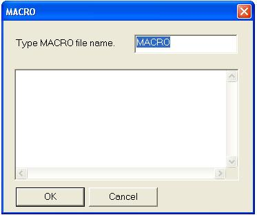
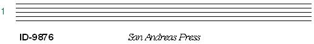

MACRO Files
In WinScore you can create macro files which contain a series of commands that you may wish to use several times. If you type MAC, the following box will appear.

You may type in any descriptive name that you wish, such as "ID-NUM." DO NOT hit <enter> yet, instead hit <TAB> to move the cursor down into the large text box. Now you may type in any normal Score commands that you wish to reuse. For example:
"_05ID-9876" 1 2 -6 % this will print, using
the Helvetica font, 6 steps below staff 1.
X
% you must exit from Edit Mode before giving the next command.
"_02San Andreas Press" 1 22 -6
X
I
% edit the last Item entered
CT
100
% center the text
X
Note that any text following the percent sign (%) is considered as a comment.
When you have finished all your entries, click on OK. The macro will be saved in your current directory.
In order to invoke these commands, type READ ID-NUM. The result should be as follows:

Type READ name, where name is the name of any macro file you have created with the MAC command or with an external text editor. The name you give will persist, so to run the macro again you can just type RE or click on the READ box on the tool bar. If you have left WinScore and then start the program later, typing RE will bring up the last macro name used.
Macro commands may be "chained" by having the last line be a READ command calling up a different macro file.
REP n - repeat reading a macro file n times
A macro file might end with SM (save with the same name) and then NX (open the next alphabetically named file). If the last line is REP n, this same macro file will be read n times. For example, if you wanted to add an instrument name and reduce the size of all staves in a series of files, VL2AA.MUS to VL2AE.MUS, first bring VL2AA to the screen and then create a macro called V2. This macro might contain the following commands:
IF P1=8 THEN P5=.7 % change all staves to size .7
"_01Violin 2" 12 33 24 0 1.2 % put name at P4=24 above staff 12
X
I % edit the last item
CT % center the text
X
SM % save with same name
NX % move to next file
REP 5 % repeat this macro for 5 files
*** You must be very careful with this command because if incorrectly used several files could be changed in unwanted ways. It is always a good idea of making backup copies before such editing.
This is used to read and edit any external text file. Its primary use is to edit macro files.
The Mini-Macro feature is a very useful tool that is sometimes overlooked by SCORE users. If one, two, or three apostrophes
(') are entered at the front of a SCORE command string, the entire string can be reactivated at a later time by
typing one, two, or three semicolons (;). For example, you have measure numbers at the beginning of each system, but there are also boxed rehearsal
numbers which you want to appear in bold-face type:
'STX 10 (' sets Mini-Macro to look on all staves for numbers [Code 10])
(hit <enter> repeatedly until 1st item to edit is found)
''7 9 ('' sets second Mini-Macro to change type font to Times-Bold)
Now each time you type
;; parameter 7 will be changed to 10. You can later move on to another page and type just
; to repeat the command STX 10. Any time you use the apostrophe(s) again, that Mini-Macro will be re-initialized. Type
;;;; to see the current stored commands for all Mini-Macros.